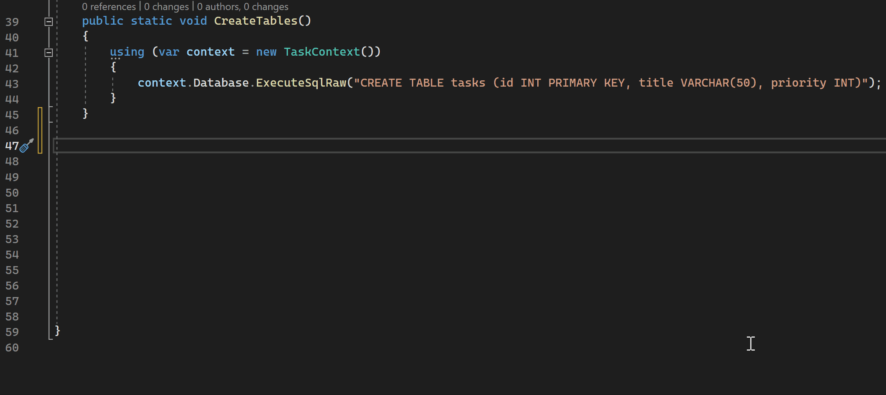
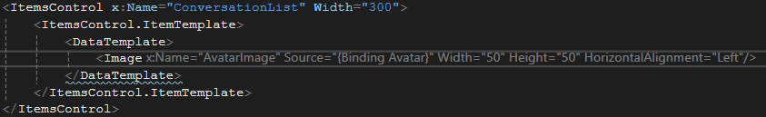
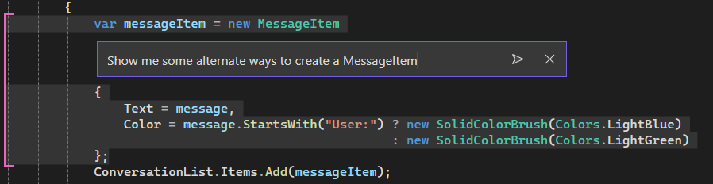
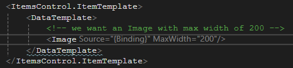
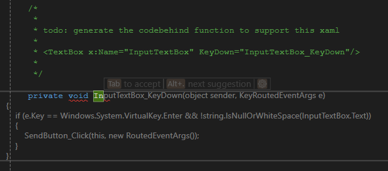
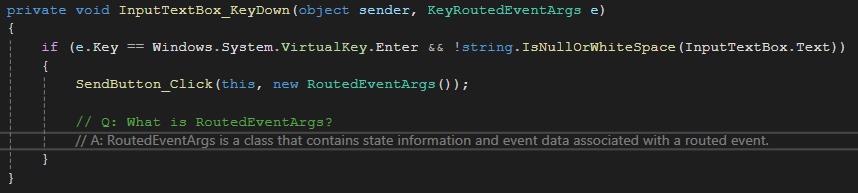
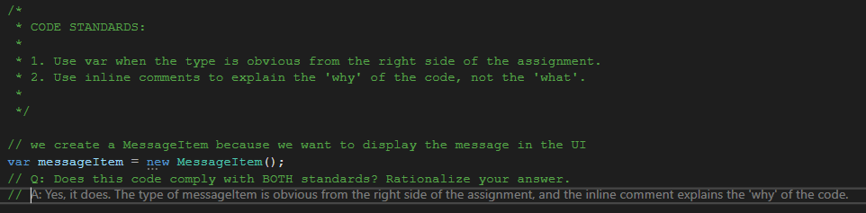

Use GitHub Copilot to create WinUI 3 / Windows App SDK apps in Visual Studio
In this how-to, we'll demonstrate how GitHub Copilot can be used to build WinUI 3 / Windows App SDK desktop apps in Visual Studio. This guide builds upon What is GitHub Copilot Completions for Visual Studio?, offering tailored tips and best practices for Copilot-assisted WinUI 3 app development.

Prerequisites
- Visual Studio 2022 (v17.10+) with the WinUI application development workload applied (see Get started with WinUI for additional configuration details). GitHub Copilot is included in Visual Studio 2022 v17.10 and later by default.
- An active subscription to GitHub Copilot associated with the GitHub account that you sign in to Visual Studio with.
- Familiarity with C#, WinUI, and Windows App SDK.
Use GitHub Copilot
Autocomplete your code snippets
GitHub Copilot in Visual Studio provides real-time code suggestions and completions based on the code you write. The most straightforward way to use Copilot is to start typing code in the editor, and Copilot will try to autocomplete your code snippet. You can then accept or dismiss the suggestions:

Tip
If you don't see the GitHub Copilot suggestions, you can enable different aspects of the feature in Visual Studio's options under Tools -> Options -> GitHub -> Copilot.
Ask Copilot for suggestions
Right-click in the code editor and select Ask Copilot. A prompt window will open where you can chat inline with Copilot to get a list of suggestions based on the current cursor position and your prompt:

Prompt Copilot with plain-language comments
Although Copilot is used primarily for code completion, you can also use natural language comments to guide Copilot in generating specific code snippets. For example, you can use comments to request a specific feature or functionality:

Use temporary comments to add code from other files to Copilot's context
If you're working on a code-behind file and want Copilot to incorporate context from the associated XAML file, you can use temporary comments to include this additional code within Copilot's context. Here's an example of how you can specify the XAML code first, and then have Copilot generate the corresponding C# code:

Ask Copilot to explain how something works with inline comments
You can use inline comments to ask Copilot to explain how a specific piece of code works. This is similar to using the inline Ask Copilot feature or the Copilot Chat window, except your prompt is typed directly into the code editor:

Use Copilot to test code standards
You can use Copilot to generate code that adheres to your project's coding standards, and to test any given snippet's adherence to those standards. Here's an example of how you can use inline comments to specify two conventions, and then have Copilot validate the code snippet against these conventions:

Recap
In this how-to, we demonstrated how to use GitHub Copilot in Visual Studio to assist you with WinUI 3 / Windows App SDK desktop app development. We covered how to:
- Autocomplete your code snippets.
- Generate autocomplete suggestions inline with Ask Copilot.
- Prompt Copilot with plain-language comments.
- Use temporary comments to add code from other files to Copilot's context.
- Ask Copilot to explain how something works with inline comments.
- Use Copilot to test and enforce code standards.